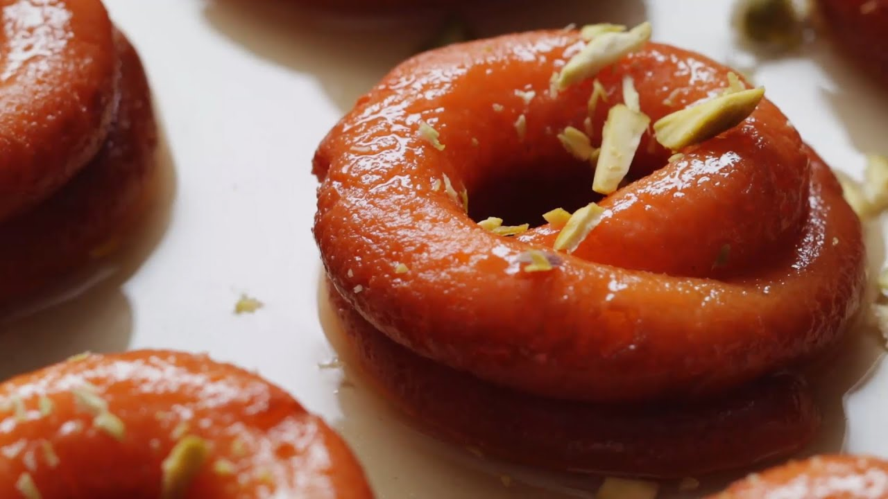
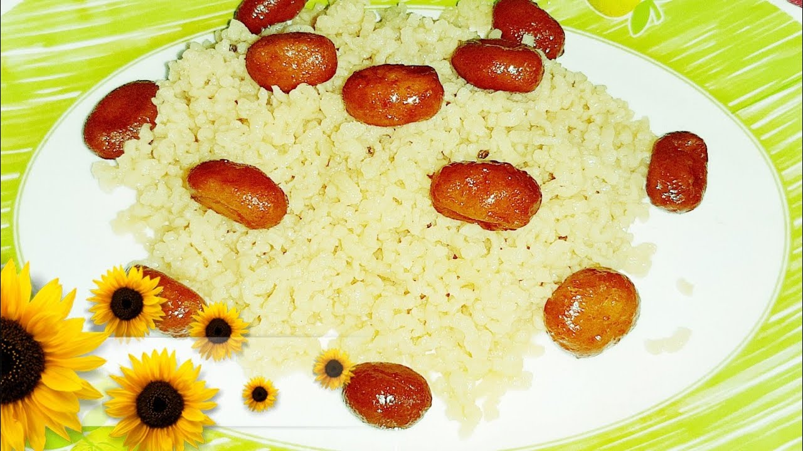

Chanar jilapi
Jilapi or Bengali Chanar Jalebi is my choice for J. I didn’t really search much for this alphabet as this was the first
one that made me pick up this theme. Amma spoke to me about Bengali Jalebi and I remembered reading about Chanar Jalebi.
read more

Chanar payesh
Channar Payesh is an authentic dessert recipe of Bengali cuisine that you can make for your family and friends on
special occasions and festivals. Also known as cottage cheese pudding or paneer kheer, this is an exotic and classic
sweet dish which is quite popular during the festive season.
read more

Kheer sagar
This dish is known as Kheer Sagar or Khira Saagar in Odia which literally translates to Ocean of milk in the Odia
language. The dish has been depicted in Hindu Mythology in scriptures where Goddess Lakshmi is serving Lord Vishnu with
it. Kheer Sagar is marble sized Chenna or Cottage cheese balls soaked in sweetened condensed milk flavoured with saffron
and cardamom.
read more

Rabri
Basically rabri is thickened sweetened milk having layers of malai or cream in it. its flavored with cardamoms, saffron
with the addition of dry fruits like almonds and pistachios. This version of rabri is also called as Lachha rabri in
hindi.
The preparation is easy but takes time. Milk is continuously simmered and reduced on a low flame till it reaches a semi
thick consistency.
read more
Rasmalai
Rasmalai is my favorite Indian sweet by miles. As a kid I wasn’t very fond of sweets but Rasmalai was my absolute
favorite. Maybe because it’s so delicious or maybe because we didn’t get to eat it that regularly compared to other
sweets. Rasmalai is a royal sweet often served in weddings and eaten on special occasions. I already have a rasmalai
recipe on my blog but I thought of making a separate post to talk about how to make perfectly soft rasmalais at home. I
hope it will be of some help to the readers.
read more

Sitabhog
Sita Bhog is my choice for S in the A to Z Bengali Sweets Series. I don’t think I came across any other Bengali Sweet
starting with S that prompted me to select. I first read about this in a “Must eat Bengali Sweets” list and very
reluctantly chose this, hoping I would get another dish for S. As luck would have it, I couldn’t find anything else with
S. So I decided to attempt Sita Bhog and procrastinated till the end as this was the last one in the series to get
cooked. The dish really put me off with the seemingly complex steps involved. I was just not able to wrap the recipe
around my mind. Maybe it could do with the way the recipe was explained.
read more